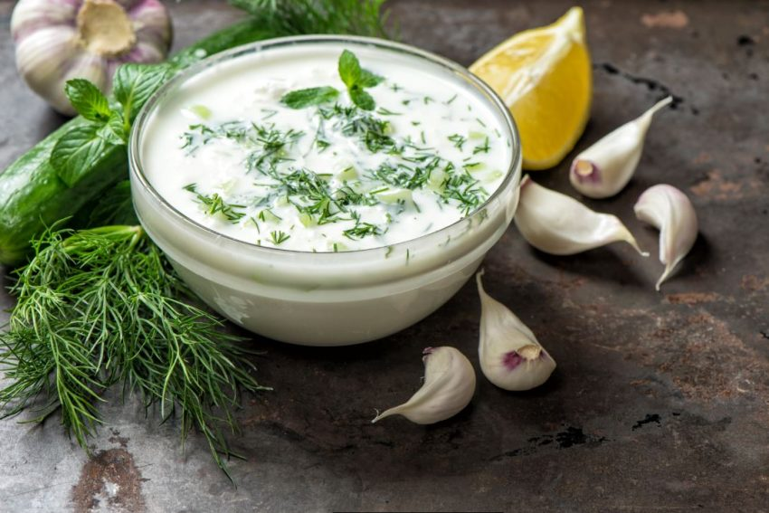

Knoflooksaus
Met knoflooksaus wordt hoofdzakelijk een variant op de koude saus mayonaise of yogonaise met knoflook als smaakbepaler bedoeld. In Nederlandse knoflooksaus wordt vaak peterselie toegevoegd. Peterselie gaat volgens sommigen de nadelige werking van knoflook op de adem tegen. Peterselie verlevendigt daarbij het aanzien van de gelige saus.

Bron